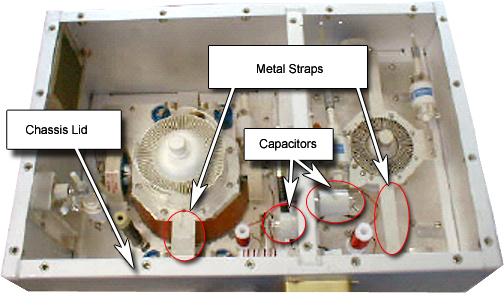
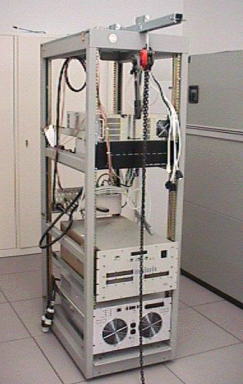
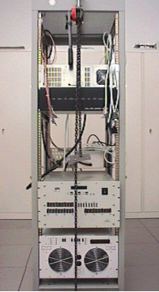

Operating Documentation
Direction 5670000, Rev# 1
Optima MR450w 1.5T Service Methods
Module Version 1.0, Version Date 5/3/07
Operating Documentation |
| Required Persons | Preliminary Reqs | Procedure | Finalization |
|---|---|---|---|
| 2 | Not Applicable | 1.5 hours | Not Applicable |
This section describes how to replace the CPC MNS Amplifier located in the 3.0T RF Accessories Cabinet.
| Item | Qty | Effectivity | Part# | Manufacturer | |
|---|---|---|---|---|---|
| Universal Lift Hoist Kit with ACGD Attachments | 1 | - | 46-317266G6 | - | |
| Standard Hand Tools | 1 | - | - | - | |
| ||||
| FATAL ELECTRIC SHOCK HAZARD!! | ||||
| Fatal voltages throughout the cabinet when entergized. | ||||
| TO PREVENT FATAL ELECTRIC SHOCK, DISCONNECT POWER FROM THE PDU BEFORE YOU PERFORM THE FOLLOWING PROCEDURES. PERFORM LOCKOUT / TAGOUT PROCEDURE PER GE OSHA LOCKOUT / TAGOUT REQUIREMENTS LISTED IN THE FIELD SERVICE EHS MANUAL & TRAINING 2000 P/N 2135387-200. |
| ||||
| Heavy Component. | ||||
| The CPC Amplifier is heavy and will need a significant amount of balancing to remove it from the RF Accessories Cabinet. | ||||
| Two individuals should perform this procedure. |
Prepare for shutdown of equipment. Notify affected personnel working in the area that LOTO is being performed.
At the front panel of the PDU, flip the circuit breaker switches for the following to the OFF position:
RF / Systems Cabinet
RFI / Amp
At the front panel of the PDU covering the circuit breaker switches, apply a personal LOTO device for each FE who will be working on the equipment.
Test that power has dissipated for each item by:
| ||||
| There are extremely high voltages internal to the 3.0T RF Amplifier. There should be very few circumstances for which cover removal of the RF Amplifier is required. If you are not sure if you should remove the covers of the amplifier prior to troubleshooting, please contact support. | ||||
Wait at least ten minutes after applying LOTO before removing any covers of the 3.0T RF Amplifier.
If RF Deck (top) covers must be removed, be sure to discharge all energy from capacitors by touching one end of a thick, long neck screwdriver to the amplifier chassis lip and the other end to each of the capacitors and metal straps inside the RF Deck. See Illustration 1.
Illustration 1: 3.0T RF Amplifier Check Points

Verify that all energy has been discharged using a Multimeter and reading the voltage between the RF Amplifier Chassis and each capacitor and metal strap internal to the 3.0T RF Amplifier. Only when this voltage reads close to 0V is it safe to work inside the amplifier. See Illustration 1.
Remove the Front Cover from the 3.0T RF accessories Cabinet.
Remove the Screws holding the CPC MNS Amplifier to the Front Rails.
Remove the Cables from the back of the CPC MNS Amplifier.
Assemble the Universal Hoist Rail and attach it to the 3.0T Accessories Cabinet. See Illustration 2
Illustration 2: Hoist Assembled And Installed

Assemble the Kick Stand. See Illustration 3
Illustration 3: KICK STAND ASSEMBLY

Install the Kick Stand in Front of the amplifier. See Illustration 4
Illustration 4: KICK STAND IN PLACE

Pull the Amplifier out of the front of the 3.0T Accessories Cabinet to the mark that indicates where to stop. See Illustration 5
Illustration 5: CENTER LINE OF AMP

Find and attach the brackets that will best fit to the side of the CPC Amplifier.
Attach the Hoist Spreader bar. See Illustration 6
Illustration 6: BRACKETS AND SPREADER BAR ATTACHED

Lift the Amplifier and ease it out on to the Kick Stand. See Illustration 7
Illustration 7: KICK STAND IN PLACE
Lift the amp slightly while holding it from swinging.
Remove the Kick Stand and Drop the amplifier to the Floor. See Illustration 8
Illustration 8: PLACE AMP ON THE FLOOR

Slide it out of the way.
Using the hoist and additional FE Help, lift the Replacement amplifier from its shipping box and place it on the floor in front of the 3.0T Accessories Cabinet.
Attach the Brackets.
Attach the Spreader Bar. See Illustration 9
Illustration 9: INSTALL BRACKETS AND SPREADER BAR ON REPLACEMENT AMP

While one FE stabilizes the Amplifier use the hoist to lift it into place. See Illustration 10
Illustration 10: HOIST INTO POSITION

Insert the Amplifier as far as possible in the cabinet.
20. Place the Kick Stand under the amplifier. See Illustration 11
Illustration 11: KICK STAND IN PLACE
Remove the brackets and hoist from the amplifier.
Slide it into the 3.0T RF Accessories Cabinet.
Reinstall the Screws on the Front of the 3.0T RF Accessories cabinet that hold the Amp in place.
Reinstall all the Cables.
Perform: MNS RF UPM Calibration.